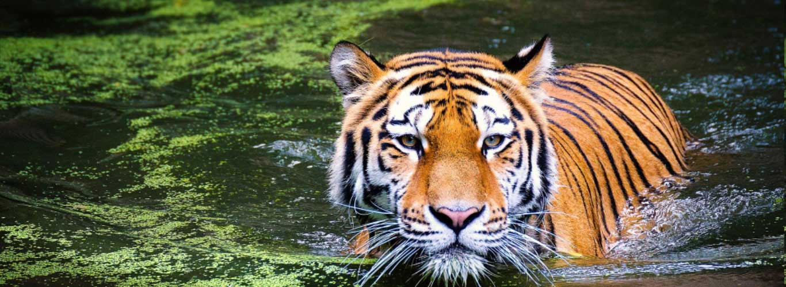

Jim Corbett National Park
Jim Corbett National Park, which is a part of the larger Corbett Tiger Reserve, a Project Tiger Reserve lies in the Nainital district of Uttarakhand. The magical landscape of Corbett is well known and fabled for its tiger richness. Established in the year 1936 as Hailey National Park, Corbett has the glory of being India's oldest and most prestigious National Park. It is also being honored as the place where Project Tiger was first launched in 1973. This unique tiger territory is best known as the father who gave birth of the Project Tiger in India to protect the most endangered species and the Royal of India called Tigers.
Spans over an extent of 520 square kilometers, its whole area comprises of hills, marshy depressions, riverine belts, grasslands and large lake. It is among the few tiger reserves in India that allows overnight stays in the lap of the National Park. Nature watch and wildlife viewing in the park is done in an open four wheeler Jeep and on elephant back. Sheltering a healthy population of tigers and rare species like Otters and the endemic fish eating crocodile, the national park is one of the most sought after destinations for the wildlife buffs. Dhikala, situated at the border of the extensive Patil Dun valley, is the most popular destination.
Featured Specials
JIm corbett National Park is the sole national park in india that offers night stay inside its jungle.
The Tourist Zones :In order to promote tourism in the region Corbett National Park has been divided into five different zones. These are the marked buffer or core area of the park where visitors can be part of wildlife safari and can enjoy the intriguing behavior of the animals with bare eyes at proximity.
Bijrani Safari Zone :Bijrani Zone is very popular tourist's hub because of its abundant natural beauty and open grasslands. The entry gate of the zone is located at only 01 Km from Ramnagar city.
Jhirna Safari Zone :Jhirna is another important tourist zone in the Jim Corbett National park that is open for tourist round the year. Jhirna Gate is located at 16 km from Ramnagar city.
Dhela Safari Zone :Dhela is a new eco tourism zone in Corbett National Park included in tiger reserve zone in November 2014. This is the only area in the reserve's buffer zone open to tourists in CTR. The zone is retaining the attention of large number of tourist because of its wealthy flora and fauna, open throughout the year, located at an approximate distance of 13 Km from Ramnagar City.
Dhikala Zone :Being the largest and most jungle-safarivaried zone in Corbett, Dhikala is famous for its abundant natural beauty as well as offering the best sight for exotic fauna. The entry gate is 18 km away from Ramnagar city. Night stay inside the Dhikala Tourism Zone is highly recommended for the hard core wildlife enthusiasts.
Durga Devi Zone :Located on the north-eastern boundary of the Jim Corbett National Park, Durga Devi zone is the heaven on planet earth for those who are fond of bird watching. Entry gate is located at an approximate distance of 36 km from Ramnagar city.
Sitabani Buffer Zone :Sitabani Zone doesn't fall under the Corbett Tiger Reserve area. If you are fond of serene ambiance of the natural beauty, must visit Sitabani area.
How to Reach Corbett :
Ramnagar is perhaps the best approach to the Corbett National Park which forms the headquarters of CTR. This small city is well connected by road and rail network with major cities of India like Delhi, Moradabad, Nainital and Bareilly. Once you reach Ramnagar, then it takes only half an hour to reach Corbett National Park. The park is around 15 Kms from Ramnagar railway station.
By Road :
Ramnagar has a very good network of road that connects the different cities. The Corbett National Park is situated at an approximate surface distance of 260 Kilometer from India's national capital Delhi. The state government of Uttarakhand plies buses at a short interval of time from Delhi, Moradabad, Haldawani, and Nainital that reaches Corbett directly.
By Rail :
The railway station in Ramnagar receives trains from different major cities of India like Delhi, Moradabad and Bareilly. A direct train to Ramnagar runs from Delhi. You can check out for Ranikhet Express, Corbett Link Express and Kathgodam Express that takes you directly to Ramnagar.